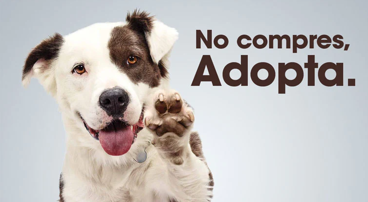

Bienvenidos
Somos una organización que ayuda a animales abandonados y busca darles un nuevo hogar.
También trabajamos con voluntarios y programas de adopción.
Lo que hacemos
- Rescate de animales
- Adopciones
- Casas de tránsito
Algunos datos de la organización
| Actividad | Resultado |
|---|---|
| Animales rescatados este año | 58 |
| Voluntarios activos | 24 |
| Adopciones realizadas | 41 |
| Casas de tránsito | 15 |
Adoptá, no compres
Darle un hogar a un animal también es darle una segunda oportunidad.
